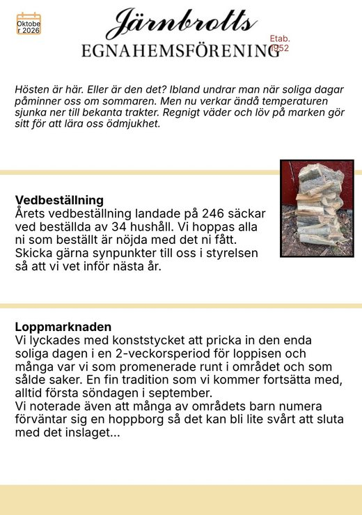
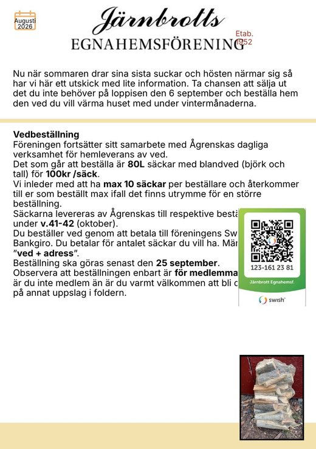
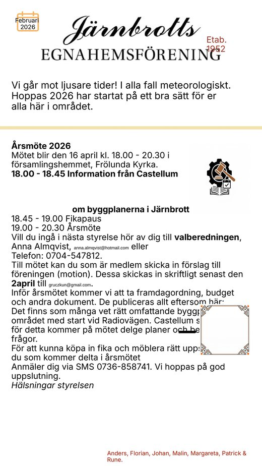
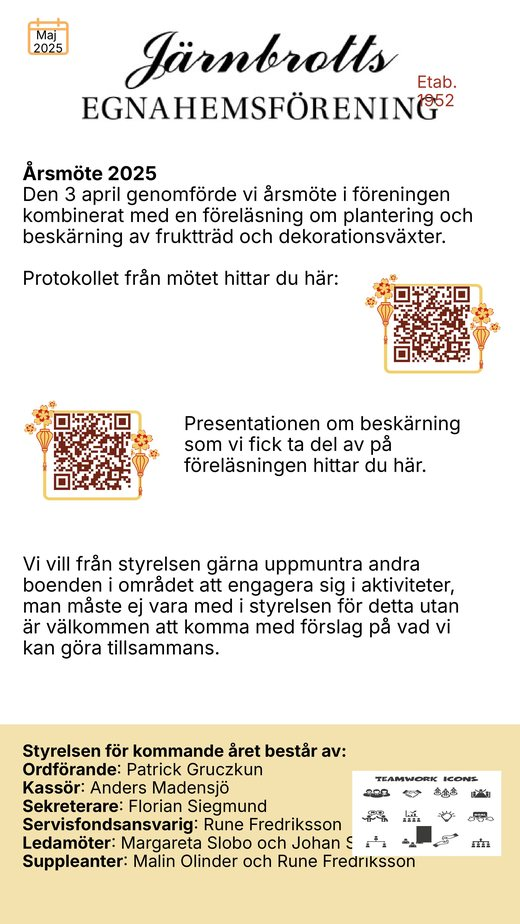

Oktober 2026
Halloween, tomten och årets ved
Vedbeställningen landade på 246 säckar, loppmarknaden fick den enda soliga dagen på två veckor, och datumen för Halloween och tomtens besök är satta.
pdf, 2,3 MB

Fyra till sex gånger om året delar vi ut Järnbrottsnytt till husägarna i området. Här ligger numren kvar, så att du kan läsa om igen eller hitta tillbaka till något du missade.

Oktober 2026
Vedbeställningen landade på 246 säckar, loppmarknaden fick den enda soliga dagen på två veckor, och datumen för Halloween och tomtens besök är satta.
pdf, 2,3 MB

Augusti 2026
Höstens vedbeställning öppnar, loppmarknaden ligger första söndagen i september, och kommunens nya hemsortering av avfall förklaras.
pdf, 2,2 MB

Februari 2026
Kallelse och dagordning för årsmötet, beställning av planteringsjord, återkoppling om parkeringsförbudet och besked om de nya sopkärlen.
pdf, 773 kB

Maj 2025
Referat från årsmötet och den nya styrelsen, vårens jordleverans, höstens vedbeställning och en påminnelse om grannsamverkan inför semestrarna.
pdf, 676 kB
Järnbrottsnytt delas ut i brevlådorna till alla husägare i området, oavsett om man är medlem eller inte. Har du inte fått ditt exemplar, eller har du något som borde stå med i nästa nummer, hör av dig till styrelsen.